CONSTRUCTING THE H8-2000
To see custom built systems, click here
Some helpful notes and pictures for constructing the Heathkit H8 clone using my new PCBs
Some helpful notes and pictures for constructing the Heathkit H8 clone using my new PCBs
This system is
powered by a
MicroATX 320 watt power supply which is plugged into my redesigned
backplane/motherboard. No voltage regulators are needed in any of the
installed cards because of the regulated power source from the MicroATX
power supply. When using this setup a bare wire should be soldered
between the voltage-in and voltage-out pads of all regulators for all
PCBs.
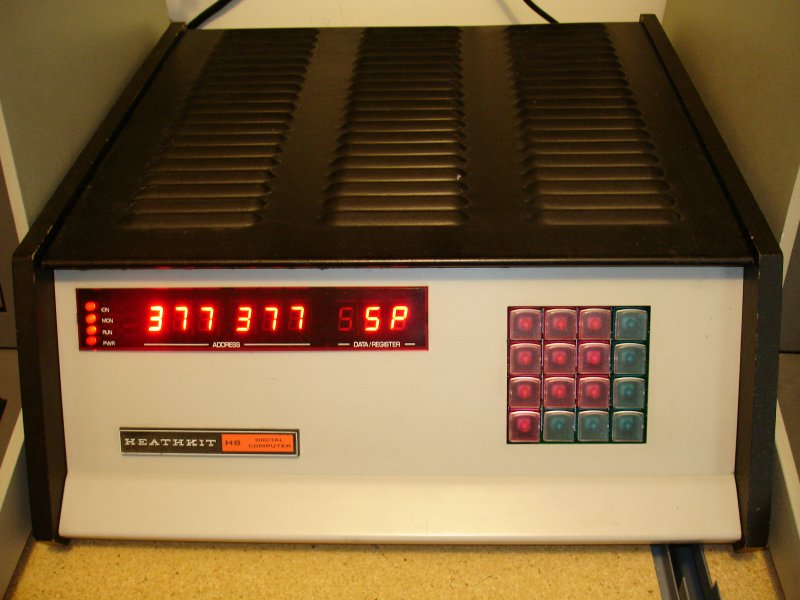
First thing you need to do is find a suitable chassis to house the H8-2000 cards. My H8-2000 is built using a stripped down H8 chassis from one of my spare Heathkit H8 computers. An alternative approach would be to use a PC tower or mini-tower case with holes cut for the front control panel or an all aluminum enclosure such as the BUD Industries AC-1429 chassis. See the bottom of this page for a system that was constructed by Terry Gulczynski using the BUD AC-1429 chassis. Terry has commented that the BUD chassis has weak weld joints at the corners and recommends that they be reinforced before cutting. This can be done either by additional welding or by using right-angle brackets bolted at the corners.
H8-BP Backplane
Material List
After deciding on a chassis the first step is to mount the backplane. Mounting holes in the H8-BP are already designed to fit into a standard Heathkit H8 chassis. Be sure to use at least .318" long headers for the backplane where the add-on cards are plugged in. Standard length headers are too short to make good contact with the card edge connectors.
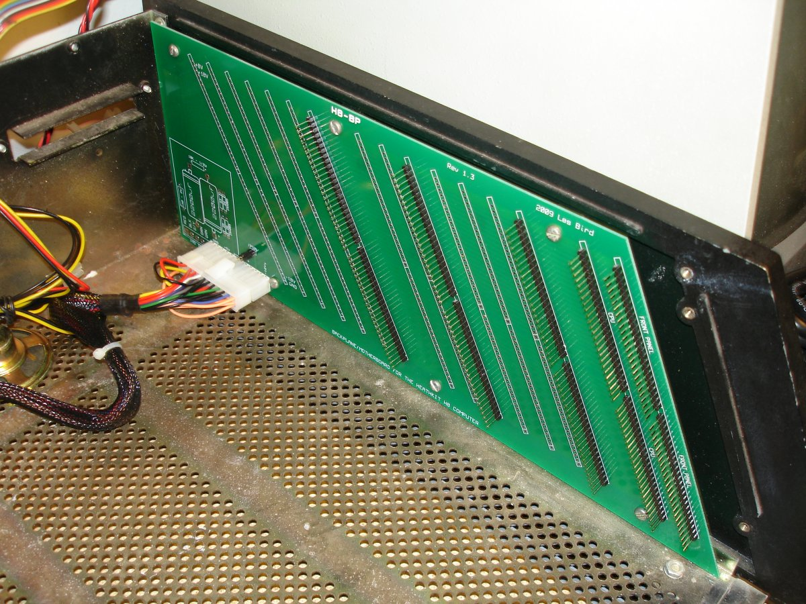
When using the ATX-style power supply install a jumper or a power toggle switch at the /PSON plug on the PCB. If you install a jumper then you'll be using the power on/off switch on the power supply to turn the computer on or off. However, if you wish to take advantage of the standby power for powering devices while the system is off you'll want to connect a toggle switch to the /PSON plug on the PCB. The standby power can be used to power devices such as an SVD that is installed inside the system. This way the SVD will retain it's contents while the system is powered off. To power an SVD using a +5V source you'll need to solder a bare wire from voltage-in to voltage-out of the regulator on the SVD.
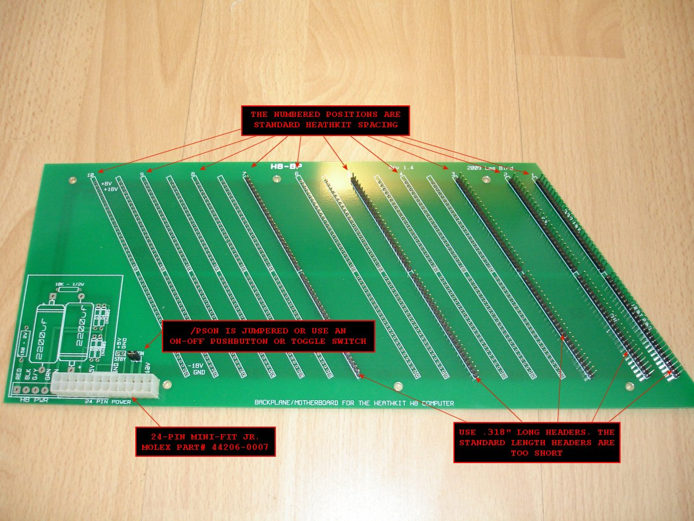
The standby power connector supplies a constant +5V while the system is off. As previously mentioned you would need to install a toggle switch at the /PSON plug for powering the system on and off instead of using the power on/off switch on the power supply itself.
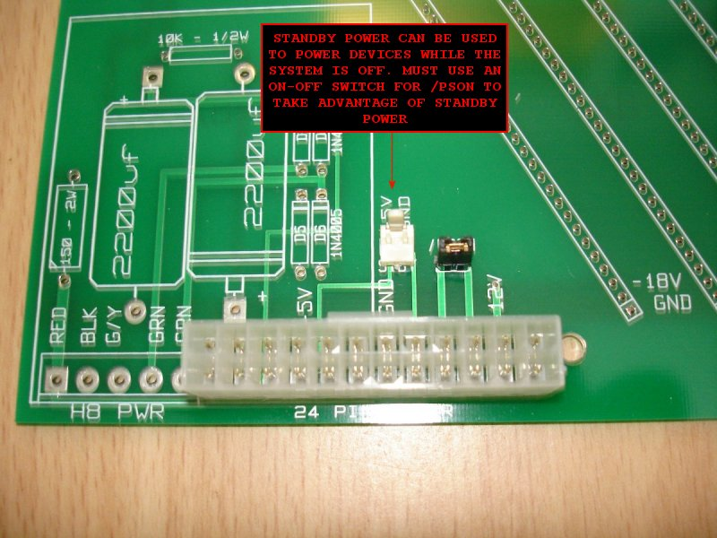
Power Supply
My system uses a 320 watt DiabloTek MicroATX power supply which fits nicely at the rear of the H8 chassis but any ATX or MicroATX power supply will do. Either a 20-pin or 24-pin power plug will work. The H8-BP backplane PCB can also work with the standard H8 power supply.
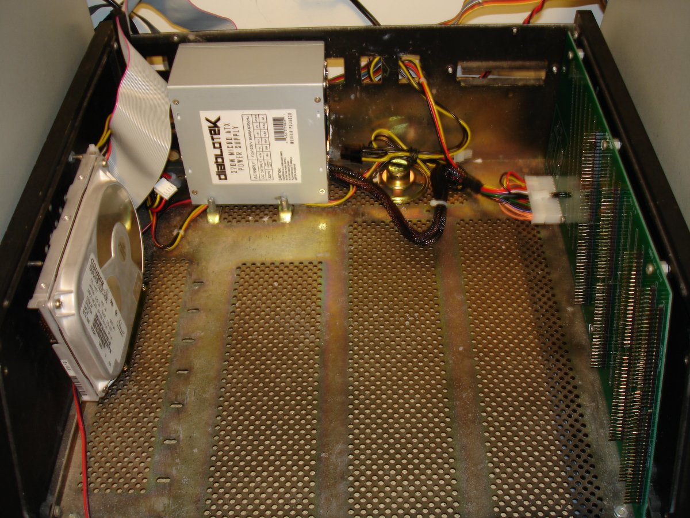
H8-17
Material List
Only three add-on cards are required for a fully functional H8-2000 computer. The cards can be installed into any available slot. For my system I installed the H8-17 into the back slot so that the ribbon cable for the floppy drives can exit the rear of the system.
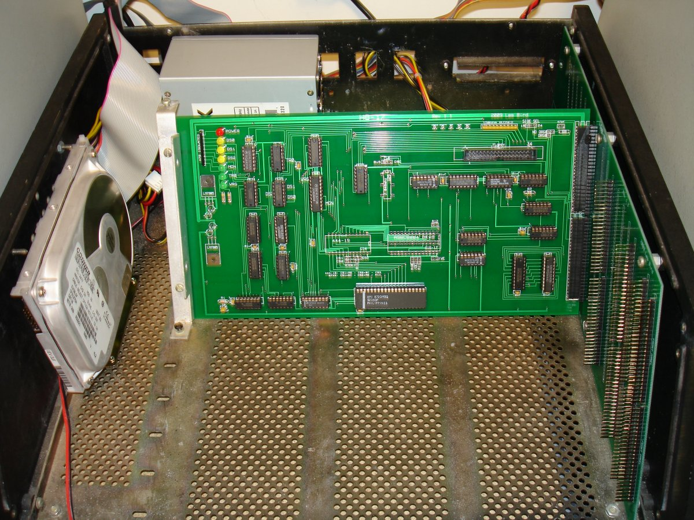
Here are some helpful notes for constructing the H8-17 disk controller card. This card is an updated version of the Heathkit WH17 Disk Controller. This card is designed to work with 5 1/4" hard sector media only. Since hard sector media is difficult to find these days and can be rather expensive there are a couple of alternate storage options available (see below).
If you are using the 24-pin SAMTEC receptacles be aware that there is a front and rear which is not clearly labeled. Test the connector by inserting a standard header into each end to find out which side is the front before soldering it to the PCB. You can also use the Molex 25-pin connectors which were used with the original Heathkit cards.
Put a bare wire strap between the center pad to the BUS position for the CLK jumper pad.
When using double-sided disks the SIDE SEL jumper pad should normally be set to the 18 position. Make sure the H8-Z80-64 Rev 2.x CPU card is also jumpered to use pin 18 of the buss for side select.
The H8-2000 does not require a ROM (444-19) or RAM to be installed on the H8-17 disk controller.
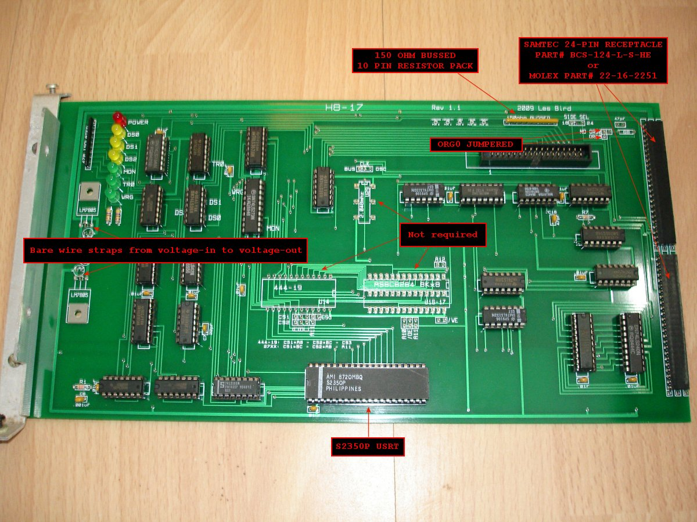
The hard to find S2350P USRT can be ordered from Electronic Surplus Inc for $14/each.
Use this silkscreen layout for component placement:

Alternate Disk Storage Options
SVD (Semi-Virtual Disk)
The SVD (Semi-Virtual Disk) was designed and programmed by Eric Rothfus. Important note: It appears that Eric has abandoned the SVD project and is no longer accepting orders from his website. I usually keep a small stock of SVD PCBs here if you should decide to build one yourself or, if you prefer, I can assemble one for you. Contact me for details. The SVD is a device that emulates a floppy drive and allows you to upload disk images to it. The disk controller card thinks it is talking to a floppy drive with a hard sector disk installed. Nearly all of the available disk images on this site are in hard sector 5 1/4" format.
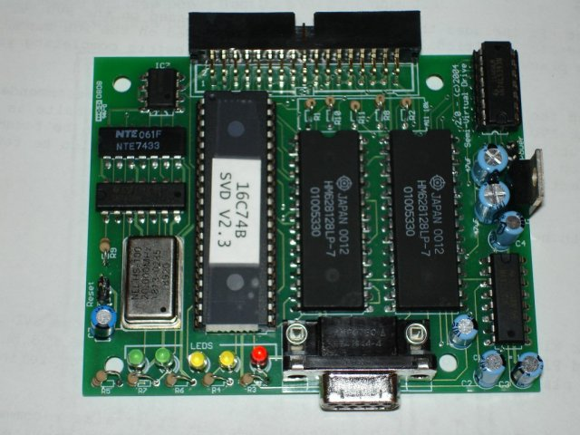
HSFE (Hard Sector Floppy Emulator)
The HSFE (Hard Sector Floppy Emulator) is a small device designed and programmed by Chris Elmquist. It sits between the disk controller and a couple of 3.5" floppy drives. A ribbon cable on one end of the HSFE plugs into the H8-17 disk controller card and a ribbon cable on the other end plugs into a pair of 3.5" floppy drives. This device will allow you to use standard low density 3.5" media with the hard sector controller. It works by simulating the hard sector pulses that the disk controller card expects to see from a hard sector disk. You can also use high density media if you cover up the high density hole with black tape and if you use a 3.5" floppy drive that supports low density disks. Most drives support low (720K) and high (1.44MB) density media.
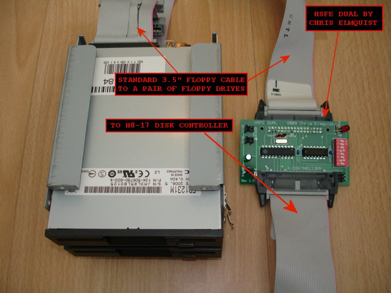
Contact me for details on how to get either of the above storage options.
H8-4
Material List
The next card installed here is the H8-4 Multi Serial Port. This is the primary card used to communicate with the computer. It has 4 serial ports on it with configurable I/O addresses and interrupts. This card will work with either the original 8250 UART or with the newer (but still old) 16550 UART. The standard port configurations are as follows:
Channel 0: I/O address 350Q and interrupt 3
350Q is the console port
Channel 1: I/O address 340Q (no interrupts)
340Q is the line printer port
Channel 2: I/O address 330Q (no interrupts)
330Q is the modem port
Channel 3: Not used
To wire up an RS232 cable for use with an external device see page 11 of the Heathkit H8-4 Operators Manual.
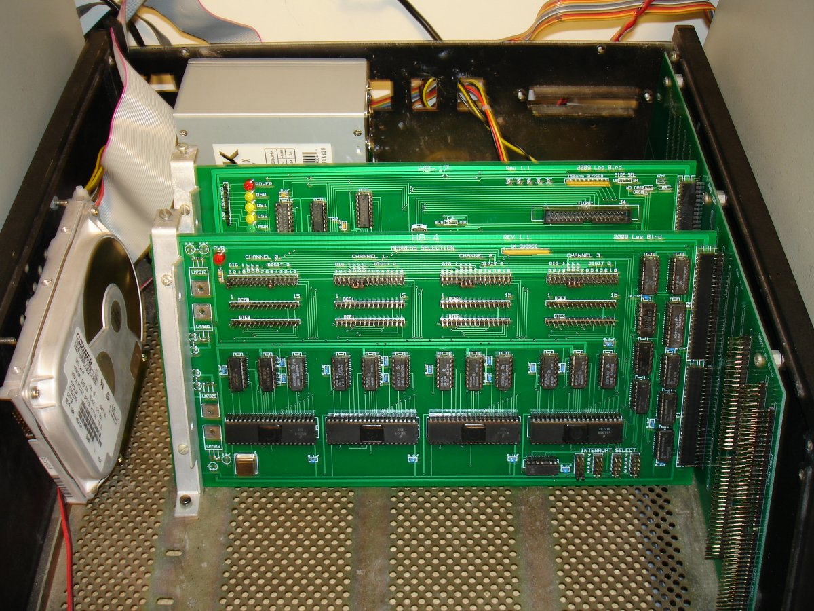
Constructing the H8-4 is very easy. Just follow the silkscreen layout for placing the parts. Be careful with the 7912 negative 12V regulator when soldering the bypass strap - voltage-in is the middle pad and voltage-out is the pad to the right. Use a half-can 1.8432MHz oscillator for timing. The hardest components to find will be the 74LS242 buffer chips. I recommend using BG Micro for ordering these chips.
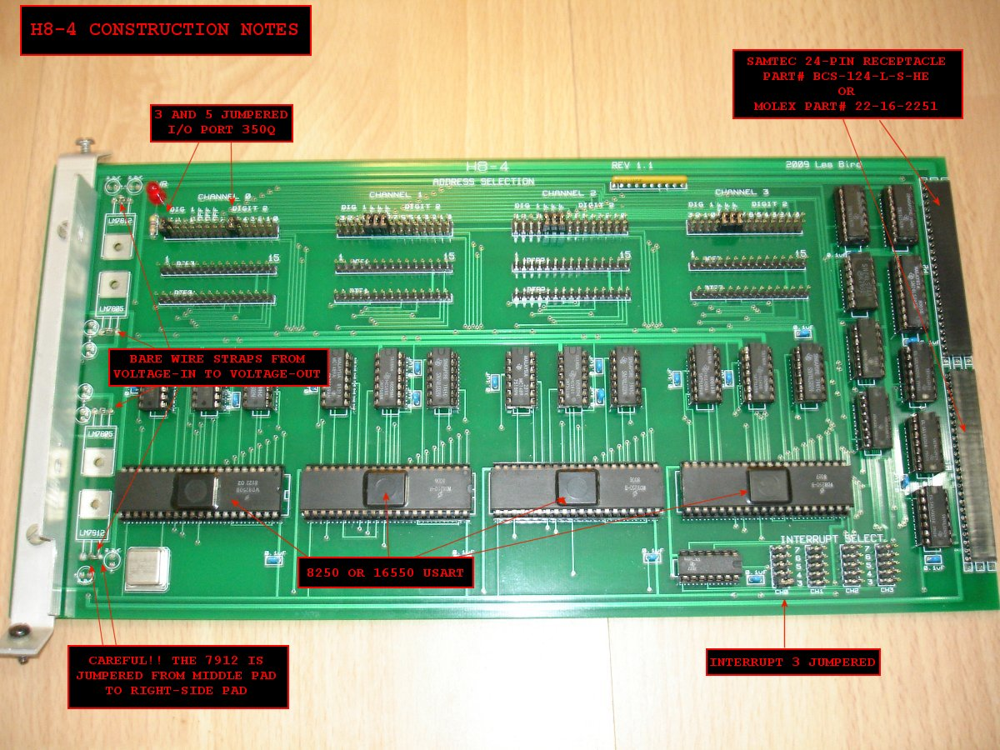
It is recommended to use the same .318" long headers that are used for the backplane for the DCE/DTE connectors on the H8-4.
A photo of a typical H8-4 serial cable:
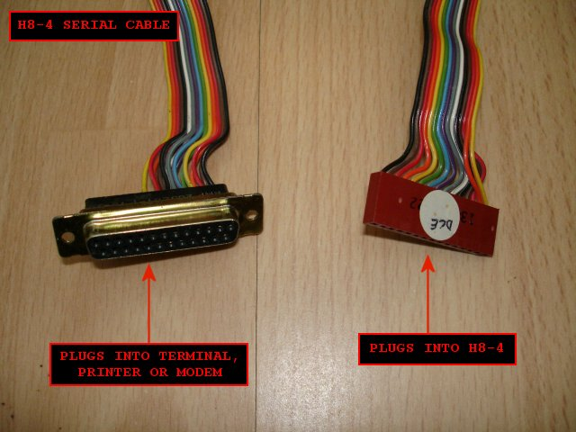
H8-4 component layout:

H8-Z80-64 Rev 2.x
Material List is included in the documentation.
CORRECTION NOTICE FOR REV 2.1 AND REV 2.1a CPU BOARDS!
An error has been discovered with the Rev 2.1 and Rev 2.1a CPU cards. Do not put a wire strap or regulator for U26. There is a short in the tracing for that part on the card. U25 and U26 are not needed and were put there for future expansion so just leave them empty. See following photo for details. Also if you use the Heathkit mounting bracket there is a plated through 'via' from the -18V source on the H8 buss that is quite close so I recommend covering it up with black tape before putting the mounting bracket on.
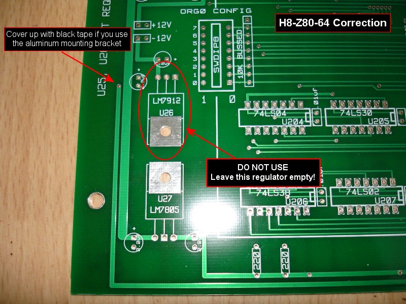
There's a problem with the original design whereby the reset circuitry gets stuck when powering up the system. This causes the front panel to go blank and there's no response to the control pad. A fix has been discovered by Norberto Collado for this problem. What you need to do is solder a wire between pins 6 and 7 of the 555 timer IC. See example below:
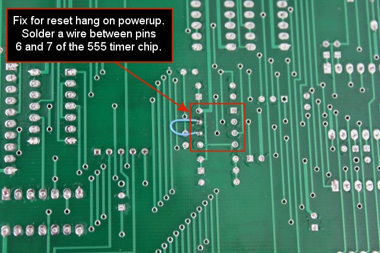
The following PDF file contains fixes for the H8-Z80 so that it can boot from the H37 and H8-67 controller boards.
Thanks to Norberto Collado for tracking this down.
H37 + H8-67 Fix (pdf)
Install the H8-Z80-64 Rev 2 CPU card in the 2nd slot from the front (the front control panel will plug into the 1st slot).

The H8-Z80-64 Rev 2 CPU board includes support for IDE hard drives using the GIDE (Generic IDE) interface. The GIDE chips can be ordered from Terry Gulczynski for about $15 for a complete set. Just plug the chips into my Z80 CPU card and set the jumper to enable the GIDE port then follow the directions for setting up the software. The CPU card has RAM onboard so no additional memory card is required in the system. The Heathkit XCON8 ROM can be downloaded from this website and burned onto a 2732 eeprom. When using the recommended clocking chip the card can be configured for a variety of speeds but it's important to note that the majority of software and the H8-17 disk controller will only work at 2MHz. The H8-Z80-64 Rev 2 documentation describes the switch settings (ORG0 CONFIG) and jumpers so be sure to read it to configure the card correctly.
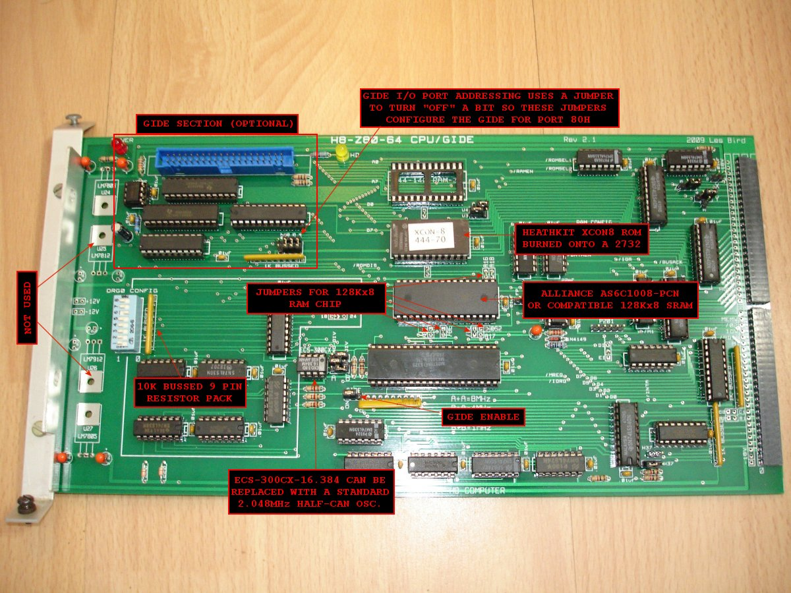
The ESC-300CX-16.384 chip appears to now be obsolete. You can use a half-can oscillator at 2.048 MHz by setting the jumpers as follows:
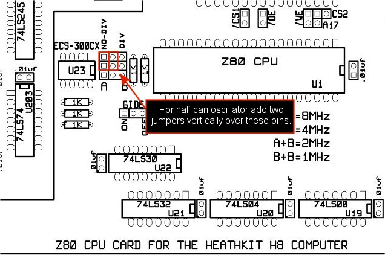
H8-Z80-64 Rev 2 layout:
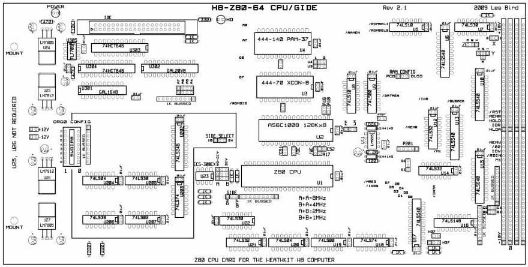
H8-FP Front Control Panel
Material List
The H8-FP Front Control Panel is the human interface for controlling the H8 computer. You can key-in programs or issue commands using the keypad and get visual feedback from the LED display. See the notes on constructing the front control panel. This control panel is used to boot the computer to an operating system such as HDOS (Heathkit Disk Operating System) or CP/M. A single keystroke is all that is needed to boot the system. Once the system is booted to an operating system all human input and output is handled via a RS232 console plugged into the H8-4 serial port board. Use the following photos for connecting the front control panel to the backplane.
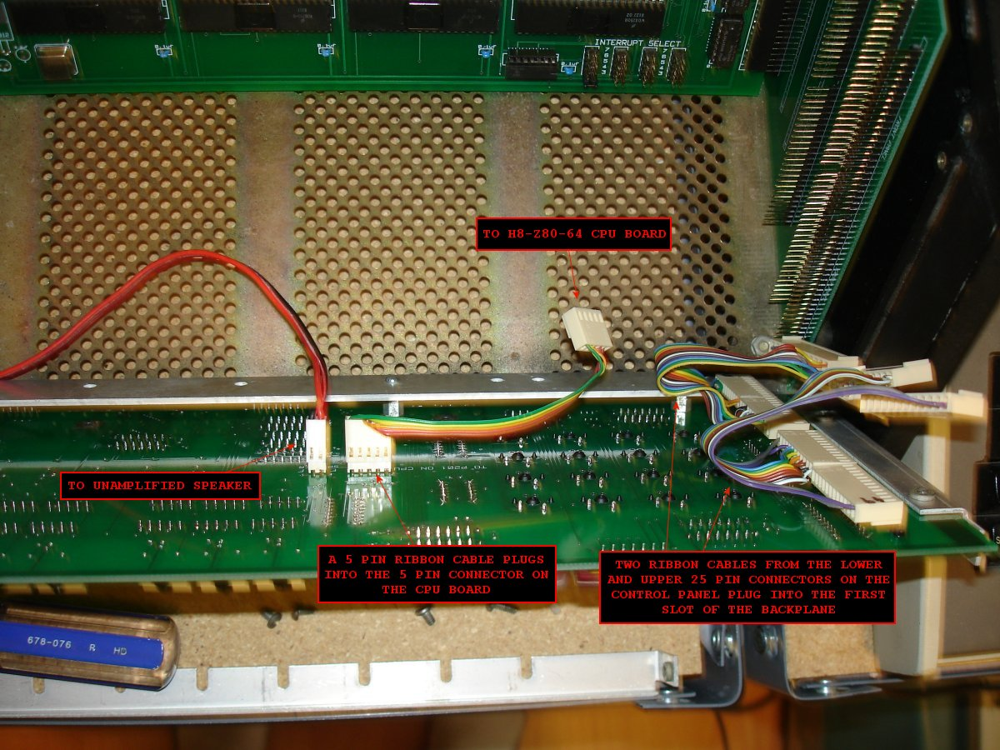
Plug the front control panel ribbon cables into the first slot of the backplane as shown below:

For component placement use the following H8-FP layout:

H8-2000 Power Up
With all cards installed and the power supply plugged in, you are ready to power the system up. The following photo illustrates what you should see when you turn the system on. The LED display will show 377.377 SP which is the top of RAM (in octal) in a 64K system. The H8 computer uses the octal notation (digits 0 through 7) for all memory and I/O addresses. To learn more about how to operate the H8-2000 Heathkit H8 clone computer you should download and read the Heathkit H8 Operators Manual.

The fully assembled and operational H8-2000 computer built using a spare Heathkit H8 chassis:
See the software section for downloading the complete disk image collection for the Heathkit 8bit computers. These disk images can be uploaded directly to an SVD or written to a 3.5" disk using the HSFE and my H8D Utility.
H8-2000 Custom Built Systems
The following H8-2000 computer was built by Terry Gulczynski using the previously mentioned BUD Industries enclosure:
The finished product


Under construction pics:
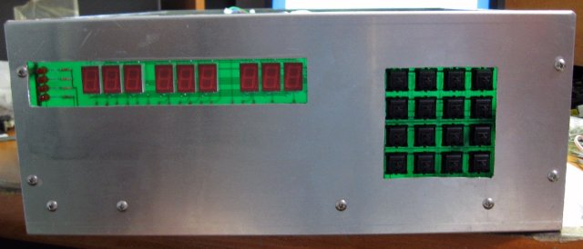
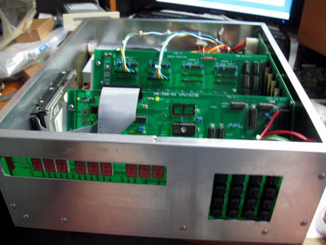
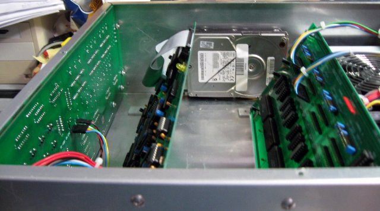
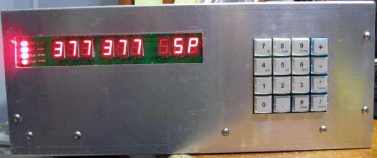
H8-2000 built by Glyn Firth using reclaimed oak:
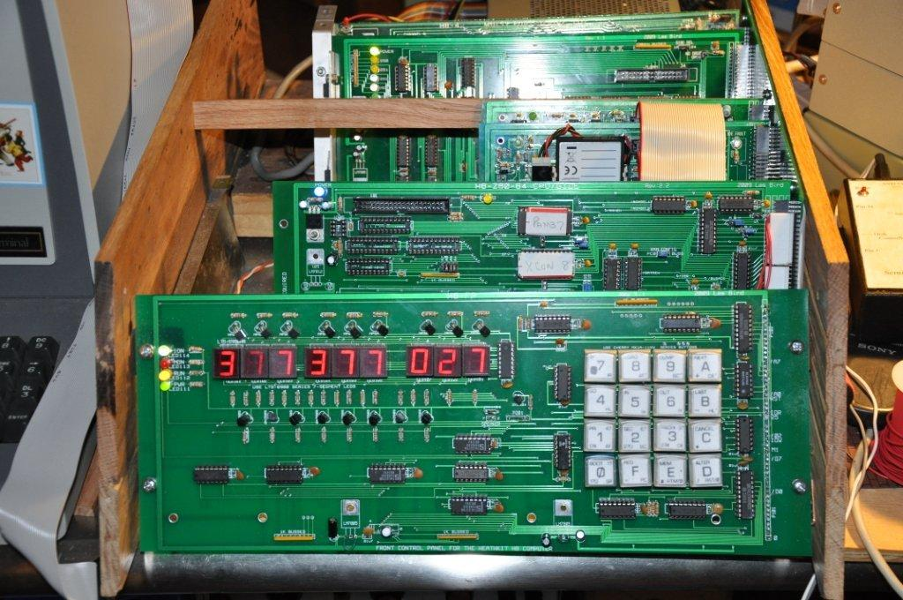
H8-2000 Constructed by Glenn Roberts using a tower PC case and a Dell ATX power supply
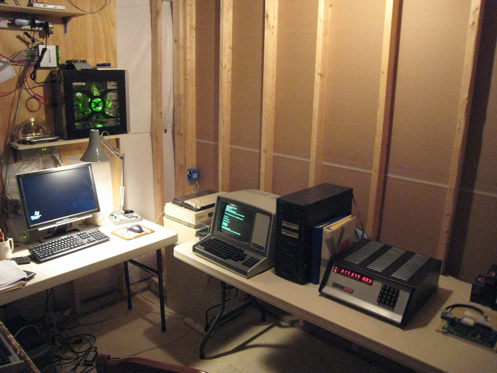
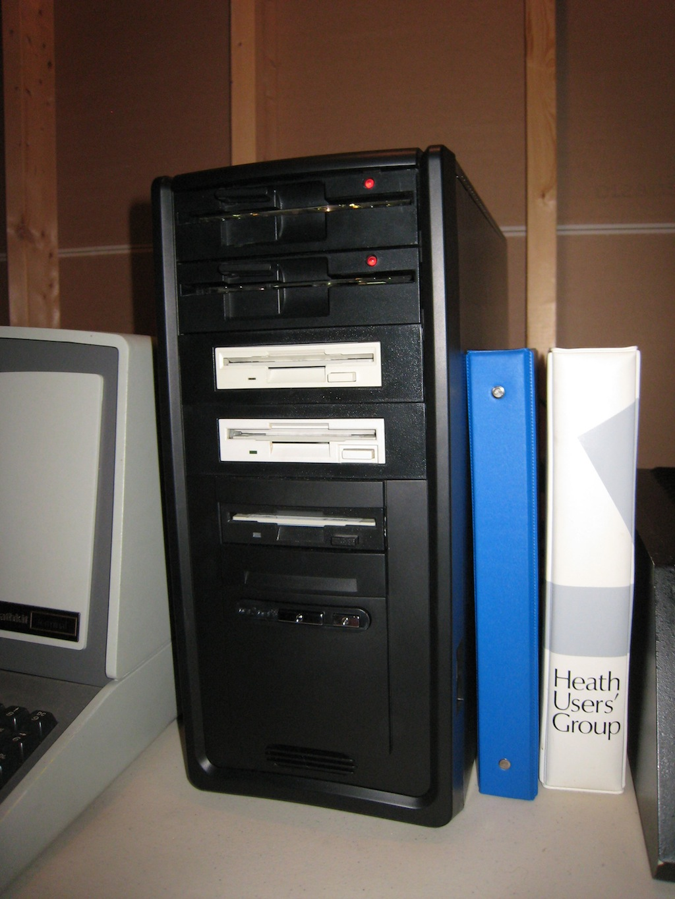
This concludes the construction of the H8-2000 Heathkit H8 clone computer.
SEBHC.ORG
September 23, 2012